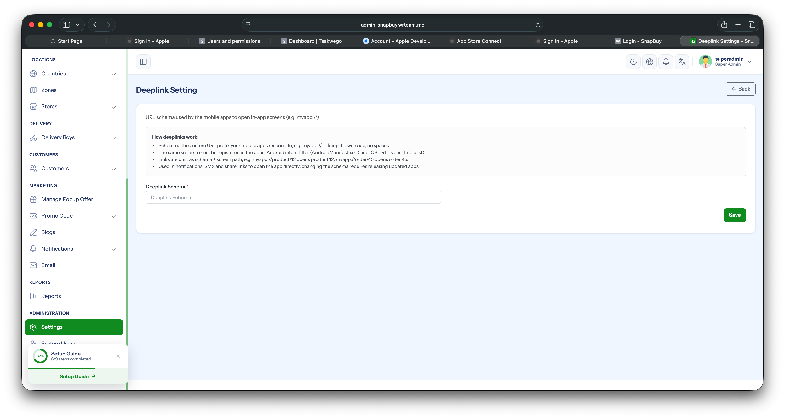

Base URL & Deeplink Setup
Configure the backend API URL and deeplink (Universal Link / App Link) settings used by the app.
Overview
The project ships with three environments: dev, stage, and demo. Each environment has its own JSON file under env/ holding the API base URL and deeplink config. A single sync script propagates those JSON values into the Dart code and the native Android / iOS config files.
Info
Most clients won't need multiple environments — they push directly to a single production server. In that case, just edit env/demo.json and ignore the dev and stage files. The demo environment is the default and is what your end users will run.
Config Keys
Each env/<name>.json file contains the following keys:
| Key | Meaning |
|---|---|
BASE_URL | Backend API root for all network calls |
WEB_URL | Web app URL |
SOCKET_BASE_URL | Socket server URL used for real-time connections |
DEEPLINK_SCHEME | Custom URL scheme (e.g. snapbuy → snapbuy://product/123) |
DEEPLINK_HOST | Universal / App Link host — must match the web app host (e.g. snapbuy.wrteam.me) |
Example — env/demo.json:
{
"BASE_URL": "https://admin-snapbuy.wrteam.me/customer/",
"WEB_URL": "https://snapbuy.wrteam.me",
"SOCKET_BASE_URL": "wss://admin-snapbuy.wrteam.me:8080/app/w73uw1egonunwexdhebg",
"DEEPLINK_SCHEME": "snapbuy",
"DEEPLINK_HOST": "snapbuy.wrteam.me"
}
How to Change Values
Step 1 — Pick Environment
Open lib/core/configs/app_config.dart and set the active environment:
static const String environment = 'demo'; // or 'dev' / 'stage'Most clients leave this on 'demo' and edit only env/demo.json (single production server, no multi-env workflow needed).
Step 2 — Edit Matching JSON
Open the matching file under env/ (e.g. env/demo.json) and update BASE_URL, DEEPLINK_SCHEME, and DEEPLINK_HOST to your values.
Step 3 — Run Sync Script
From the project root:
dart run tool/apply_config.dartThe script automatically patches:
baseUrl,deeplinkScheme,deeplinkHostconstants inapp_config.dart- Android
<data>intent-filter tags inAndroidManifest.xml(scheme + host;pathPatternis preserved) - iOS
CFBundleURLSchemesfirst entry inInfo.plist(the Google Sign-In reverse-client-ID below is left untouched) - iOS
applinks:<host>entry inRunner.entitlements
Step 4 — Rebuild
flutter clean && flutter runFiles Involved
| File | Purpose |
|---|---|
lib/core/configs/app_config.dart | Dart-side config consumed by the app |
env/dev.json · env/stage.json · env/demo.json | Source of truth per environment |
tool/apply_config.dart | Sync script |
android/app/src/main/AndroidManifest.xml | Android deeplink intent filters |
ios/Runner/Info.plist | iOS URL scheme |
ios/Runner/Runner.entitlements | iOS Universal Links |
Important Notes
Warning
- Never edit the constants in
app_config.dartby hand — the sync script overwrites them. Edit the JSON instead. DEEPLINK_HOSTmust match the web app domain for iOS Universal Links and Android App Links to work.DEEPLINK_SCHEMEis the scheme value used for deeplinking. and it must be same in app settings and in web app. (dont change unless you want)WEB_URLmust match theDEEPLINK_HOSTdomain (e.g.https://<DEEPLINK_HOST>).
Tip
You can switch environments at any time: change the environment constant → rerun the sync script → rebuild the app.
Panel-Side Deeplink Setting
The scheme configured above must also be set in the Admin Panel, and the Play Store / App Store URLs must be added so external links redirect correctly:
| Setting | Menu path |
|---|---|
| Deeplink Schema | System Setting → General Setting → Deep Link Settings |
| Play Store & App Store URLs | System Setting → App Setting → App URL |
Full details, testing commands, and a troubleshooting table are on the Admin Panel — Deeplink Settings page.
Keep the scheme identical everywhere
The DEEPLINK_SCHEME value in env/demo.json, the Admin Panel's Deeplink Schema field, and the compiled Android/iOS apps must all match exactly. A mismatch breaks deeplinks silently — taps simply do nothing.